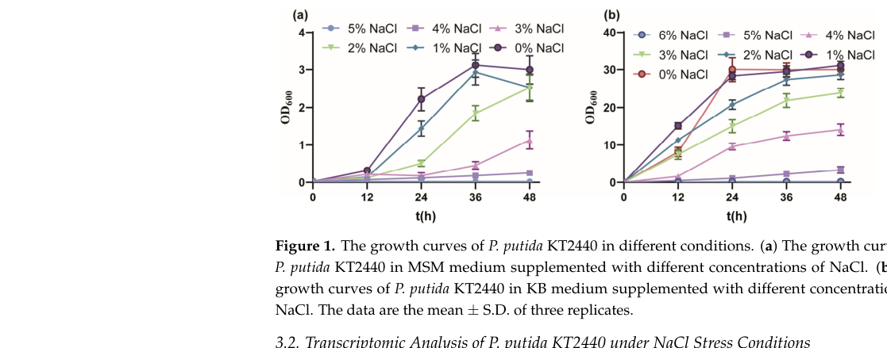

nhaB encodes the NhaB sodium/proton antiporter, an inner-membrane transporter that exports sodium in exchange for protons.
| GO Term | Evidence | Action | Reason |
|---|---|---|---|
|
GO:0005886
plasma membrane
|
IEA
GO_REF:0000120 |
ACCEPT |
Summary: The bacterial plasma-membrane annotation is correct for NhaB.
Reason: UniProt places NhaB in the cell inner membrane, corresponding to plasma membrane in bacterial GO annotation, and membrane localization is intrinsic to antiporter function.
Supporting Evidence:
file:PSEPK/nhaB/nhaB-uniprot.txt
SUBCELLULAR LOCATION: Cell inner membrane
file:PSEPK/nhaB/nhaB-goa.tsv
GO:0005886 plasma membrane
file:PSEPK/nhaB/nhaB-deep-research-falcon.md
NhaB-family proteins are **integral inner (cytoplasmic) membrane** transporters with multiple transmembrane helices
|
|
GO:0006814
sodium ion transport
|
IEA
GO_REF:0000120 |
MARK AS OVER ANNOTATED |
Summary: Sodium ion transport is true but less specific than sodium ion transmembrane transport for NhaB.
Reason: The transporter is an integral membrane sodium/proton antiporter; GO:0035725 captures the transmembrane process more precisely.
Supporting Evidence:
file:PSEPK/nhaB/nhaB-uniprot.txt
extrudes sodium in exchange for
file:PSEPK/nhaB/nhaB-goa.tsv
GO:0006814 sodium ion transport
|
|
GO:0015081
sodium ion transmembrane transporter activity
|
IEA
GO_REF:0000104 |
MARK AS OVER ANNOTATED |
Summary: This sodium transporter parent is correct but less informative than sodium:proton antiporter activity.
Reason: GO:0015385 captures both the sodium substrate and proton antiport mechanism.
Supporting Evidence:
file:PSEPK/nhaB/nhaB-uniprot.txt
Na(+)/H(+) antiporter
file:PSEPK/nhaB/nhaB-goa.tsv
GO:0015081 sodium ion transmembrane transporter activity
|
|
GO:0015297
antiporter activity
|
IEA
GO_REF:0000104 |
MARK AS OVER ANNOTATED |
Summary: This antiporter parent is true but less informative than sodium:proton antiporter activity.
Reason: GO:0015385 captures the specific exchanged substrates for NhaB.
Supporting Evidence:
file:PSEPK/nhaB/nhaB-uniprot.txt
Na(+)/H(+) antiporter
file:PSEPK/nhaB/nhaB-goa.tsv
GO:0015297 antiporter activity
|
|
GO:0015385
sodium:proton antiporter activity
|
IEA
GO_REF:0000120 |
ACCEPT |
Summary: Sodium:proton antiporter activity is the core molecular function of NhaB.
Reason: UniProt and Rhea describe sodium export in exchange for external protons.
Supporting Evidence:
file:PSEPK/nhaB/nhaB-uniprot.txt
Na(+)/H(+) antiporter that extrudes sodium
file:PSEPK/nhaB/nhaB-uniprot.txt
Reaction=2 Na(+)(in) + 3 H(+)(out)
file:PSEPK/nhaB/nhaB-goa.tsv
GO:0015385 sodium:proton antiporter activity
file:PSEPK/nhaB/nhaB-deep-research-falcon.md
NhaB is a **membrane Na+/H+ antiporter** that catalyzes **Na+ efflux in exchange for H+ influx** (Na+/H+ antiport), contributing to intracellular Na+ control and pH homeostasis.
|
|
GO:0016020
membrane
|
IEA
GO_REF:0000120 |
MARK AS OVER ANNOTATED |
Summary: The generic membrane annotation is true but redundant with plasma membrane.
Reason: GO:0005886 is the more informative component for this bacterial inner-membrane transporter.
Supporting Evidence:
file:PSEPK/nhaB/nhaB-uniprot.txt
Cell inner membrane
file:PSEPK/nhaB/nhaB-goa.tsv
GO:0016020 membrane
|
|
GO:0035725
sodium ion transmembrane transport
|
IEA
GO_REF:0000120 |
ACCEPT |
Summary: Sodium ion transmembrane transport is the correct process annotation for NhaB.
Reason: The NhaB antiporter moves sodium across the membrane in exchange for protons. Falcon deep research places the KT2440 ortholog's physiological role in Na+ and pH homeostasis, though this is homology-based with no KT2440-specific knockout phenotype yet reported.
Supporting Evidence:
file:PSEPK/nhaB/nhaB-uniprot.txt
extrudes sodium in exchange for
file:PSEPK/nhaB/nhaB-goa.tsv
GO:0035725 sodium ion transmembrane transport
file:PSEPK/nhaB/nhaB-deep-research-falcon.md
maintenance of **Na+ homeostasis** and contribution to **pH homeostasis** during osmotic/salt stress
|
|
GO:0055085
transmembrane transport
|
IEA
GO_REF:0000108 |
MARK AS OVER ANNOTATED |
Summary: This broad transmembrane transport parent is over-annotated for NhaB.
Reason: GO:0035725 and GO:0015385 capture the substrate and mechanism more precisely.
Supporting Evidence:
file:PSEPK/nhaB/nhaB-uniprot.txt
Na(+)/H(+) antiporter
file:PSEPK/nhaB/nhaB-goa.tsv
GO:0055085 transmembrane transport
|
Q: Which sodium and pH ranges make NhaB the dominant sodium/proton antiporter in KT2440?
Q: Does KT2440 NhaB also catalyze Li(+)/H(+) antiport, as reported for the P. aeruginosa ortholog, and is it electrogenic with the 3 H(+) : 2 Na(+) stoichiometry described for E. coli NhaB?
Q: Why is nhaA-II (PP_3958), rather than nhaB, the strongly induced antiporter under hypertonic stress in KT2440, and under which conditions does nhaB become physiologically dominant?
Experiment: Measure sodium export and growth across pH/sodium gradients in wild-type and nhaB knockout strains.
Type: ion transport and salt-stress growth assay
Experiment: Compare Na(+)/H(+) and Li(+)/H(+) antiport activity and apparent Km in inverted membrane vesicles from KT2440 wild-type versus nhaB, nhaA-I, and nhaA-II single and combinatorial deletion strains.
Type: acridine-orange dequenching antiport assay in inverted membrane vesicles
The research report should be a detailed narrative explaining the function, biological processes, and localization of the gene product. Citations should be given for all claims.
You should prioritize authoritative reviews and primary scientific literature when conducting research. You can supplement
this with annotations you find in gene/protein databases, but these can be outdated or inaccurate.
We are specifically interested in the primary function of the gene - for enzymes, what reaction is catalyzed, and what is the substrate specificity? For transporters, what is the substrate? For structural proteins or adapters, what is the broader structural role? For signaling molecules, what is the role in the pathway.
We are interested in where in or outside the cell the gene product carries out its function.
We are also interested in the signaling or biochemical pathways in which the gene functions. We are less interested in broad pleiotropic effects, except where these elucidate the precise role.
Include evidence where possible. We are interested in both experimental evidence as well as inference from structure, evolution, or bioinformatic analysis. Precise studies should be prioritized over high-throughput, where available.
The target protein is NhaB-family Na(+)/H(+) antiporter encoded by nhaB in Pseudomonas putida KT2440 (ordered locus PP_4031, UniProt Q88FQ6 as provided by the user). In KT2440-focused literature, NhaB is explicitly listed as one of the genome-encoded Na+/H+ antiporters (along with NhaA-I and NhaA-II), consistent with the UniProt description and domain/family assignment to the NhaB-type Na+/H+ antiporter family. (fan2024improvementinsalt pages 2-3)
Evidence limitation: Within the literature retrieved for this run, no KT2440-specific biochemical characterization (transport kinetics, stoichiometry) or gene knockout phenotype uniquely attributable to PP_4031/nhaB was found; thus, functional annotation of Q88FQ6 must be treated as predominantly homology-based to experimentally studied NhaB orthologs, complemented by KT2440-specific stress-physiology context. (fan2024improvementinsalt pages 2-3, fan2024improvementinsalt pages 12-14)
Bacterial Na+/H+ antiporters are secondary active transporters that exchange cytosolic Na+ for external H+ (or the reverse, depending on gradients), thereby coupling ion homeostasis and pH regulation to the proton motive force. A recent synthesis of prokaryotic Na+/H+ exchangers summarizes NhaB-family antiporters as typically ~500–550 amino acids and ~9–12 transmembrane helices, widely distributed in bacteria, and functionally distinct from the better-known CPA-family antiporters such as NhaA. (patinoruiz2022prokaryoticna+h+exchangers—transport pages 4-5, patinoruiz2022prokaryoticna+h+exchangers—transport pages 5-6)
NhaB-family transporters are primarily involved in Na+ export (Na+/H+ exchange), and in some organisms also support Li+ export (Li+/H+ exchange). In Pseudomonas aeruginosa, NhaB is described as less ion-specific than NhaP and capable of translocating Li+ as well as Na+, with strong Li+/H+ exchange among the set of antiporters studied. (foreman2021geneticandbiochemical pages 1-2, foreman2021geneticandbiochemical pages 4-6)
A key mechanistic feature distinguishing NhaB from some other antiporters is stoichiometry. A contemporary review summarizes classic work indicating E. coli NhaB has an electrogenic stoichiometry of 3 H+ : 2 Na+, whereas NhaA is often described as 2 H+ : 1 Na+. These stoichiometries affect how antiport contributes to both sodium efflux and membrane potential/pH balance. (patinoruiz2022prokaryoticna+h+exchangers—transport pages 4-5, patinoruiz2022prokaryoticna+h+exchangers—transport pages 5-6)
NhaB-like antiporters show diverse pH-dependence profiles across bacteria. A comparative study of NhaB-like proteins reports that many NhaB-like antiporters exhibit stronger activity at alkaline pH and reduced activity at more acidic pH, and that the apparent pH sensitivity often reflects pH-dependent changes in apparent Km (affinity) rather than changes in maximal turnover. For example, P. aeruginosa NhaB activity decreased markedly below pH 7 when assayed at low NaCl (0.5 mM), while some Vibrio NhaB retained detectable activity at pH 6.5 if NaCl was high (100 mM), emphasizing that both pH and external Na+ influence activity. (kiriyama2013diversitiesandsimilarities pages 1-2)
Inferred function (homology-supported): NhaB is a membrane Na+/H+ antiporter that catalyzes Na+ efflux in exchange for H+ influx (Na+/H+ antiport), contributing to intracellular Na+ control and pH homeostasis. This inference is supported by (i) KT2440 genome annotation listing NhaB as a Na+/H+ antiporter, and (ii) strong experimental support for the same molecular function across NhaB orthologs (E. coli and Pseudomonas). (fan2024improvementinsalt pages 2-3, patinoruiz2022prokaryoticna+h+exchangers—transport pages 5-6, foreman2021geneticandbiochemical pages 1-2)
Likely substrate scope: Na+ is the principal substrate; Li+ transport is plausible by analogy to Pseudomonas NhaB orthologs, but direct evidence for Li+ transport by KT2440 NhaB is not available in retrieved sources. (foreman2021geneticandbiochemical pages 4-6, fan2024improvementinsalt pages 2-3)
Inferred localization: NhaB-family proteins are integral inner (cytoplasmic) membrane transporters with multiple transmembrane helices, consistent with their role in exchanging ions across the cytoplasmic membrane. This is supported by general NhaB family descriptions (multi-pass TM proteins) and by the requirement for membrane vesicle assays in experimental studies of orthologs. (patinoruiz2022prokaryoticna+h+exchangers—transport pages 4-5, foreman2021geneticandbiochemical pages 2-4)
Likely role in KT2440: maintenance of Na+ homeostasis and contribution to pH homeostasis during osmotic/salt stress, functioning as part of a broader membrane-based stress-response network.
KT2440-specific evidence shows that Na+/H+ antiport capacity is relevant to salt tolerance: in a 2024 KT2440 salt-tolerance study, nhaA-I, nhaA-II and nhaB are listed as the strain’s Na+/H+ antiporter complement. Under hypertonic stress (5% NaCl), nhaA-II (PP_3958)—not nhaB—was reported as strongly upregulated (fold change 7.429; p = 0.0000), and overexpression of nhaA-II slightly improved growth at 4% NaCl. This suggests that, at least under the tested conditions/timepoint, NhaA-II is a prominent induced antiporter, whereas NhaB may be constitutive, regulated differently, or simply not among the strongest DEGs in those conditions (no nhaB fold-change was reported in the retrieved Table 1 excerpt). (fan2024improvementinsalt pages 8-10, fan2024improvementinsalt pages 12-14)
Family/ortholog evidence supports that NhaB commonly contributes under particular ionic regimes: classical E. coli genetics indicate NhaB provides Na+/H+ antiport capacity especially when other systems are limiting and that deleting both nhaA and nhaB eliminates specific Na+/H+ antiporter activity in membranes, demonstrating physiological importance for sodium handling. (pinner1993physiologicalroleof pages 4-5, pinner1993physiologicalroleof pages 2-3)
A 2024 study directly addressing KT2440 salt tolerance provides the most recent organism-specific dataset in this run. Key quantitative findings:
- Wild-type KT2440 tolerated up to 4% w/v NaCl in minimal salts medium (MSM). (fan2024improvementinsalt pages 2-3, fan2024improvementinsalt media a7cd494a)
- Transcriptomics (24 h) under 5% NaCl identified nhaA-II (PP_3958) among significantly upregulated genes (7.429-fold; p = 0.0000). (fan2024improvementinsalt pages 8-10)
- Engineering strategy: co-expression of an exogenous Na+/H+ antiporter (E. coli EcnhaA) with endogenous betB increased maximum tolerance to 5% w/v NaCl, and adding compatible solutes increased tolerance to 6% w/v NaCl. (fan2024improvementinsalt pages 2-3, fan2024improvementinsalt pages 10-12)
- Functional outcome in a real task: under 4% w/v NaCl, in 48 h, the engineered strain degraded 56.70% benzoic acid and 95.64% protocatechuic acid, while wild-type KT2440 did not show biodegradation under the same conditions. (fan2024improvementinsalt pages 2-3)
These results support the practical importance of Na+/H+ antiport capacity for KT2440 performance in high-salinity bioprocesses, even though they do not specifically dissect KT2440 NhaB. (fan2024improvementinsalt pages 2-3, fan2024improvementinsalt media a7cd494a)
While not NhaB-specific, mechanistic work continues to refine the structural principles of pH-regulated Na+/H+ antiport. For example, a 2024 study on the NhaA fold shows that constraining conformational transitions (via cross-linking across hallmark unwound TM crossings) can inhibit antiporter activity and impair high-salt growth complementation, reinforcing the concept that antiport depends on alternating-access conformational cycling and that structural “fold hallmarks” can be critical. This provides context for interpreting NhaB-family function as similarly conformationally gated and pH-regulated, even though NhaB lacks equivalent structural resolution in the retrieved sources. (fan2024improvementinsalt pages 2-3)
P. putida KT2440 is widely used as a chassis for biodegradation/bioremediation. The 2024 engineering study demonstrates a concrete implementation: improving salt tolerance via Na+/H+ antiporter function (heterologous NhaA) and osmolyte metabolism enabled biodegradation of aromatics under 4% NaCl, a condition where the wild-type strain failed. This is a practical, real-world-relevant use case because many industrial wastewaters are saline and contain aromatic pollutants. (fan2024improvementinsalt pages 2-3)
KT2440 salt tolerance improvement combined (i) ion homeostasis (Na+/H+ antiport) and (ii) compatible-solute pathways (betaine/proline). This reflects an application strategy increasingly used in microbial engineering: coupling membrane transport engineering with osmoprotectant pathways to expand operational windows for industrial fermentation and environmental remediation. (fan2024improvementinsalt pages 10-12)
A 2022 review of prokaryotic Na+/H+ exchangers highlights several field-level consensus points relevant to annotating NhaB in organisms with limited direct experimentation:
- NhaB is a broadly distributed bacterial Na+/H+ antiporter whose physiological niche can differ from NhaA, partly due to differences in stoichiometry/electrogenicity and regulation. (patinoruiz2022prokaryoticna+h+exchangers—transport pages 4-5, patinoruiz2022prokaryoticna+h+exchangers—transport pages 5-6)
- For NhaB-family proteins, structural information remains limited, and many mechanistic interpretations rely on genetic/functional assays and comparative inference. This limitation is directly relevant to KT2440 Q88FQ6, for which strain-specific functional studies were not found in the retrieved set. (patinoruiz2022prokaryoticna+h+exchangers—transport pages 18-19, fan2024improvementinsalt pages 2-3)
Because KT2440-specific NhaB kinetics were not retrieved, P. aeruginosa provides a relevant Gram-negative Pseudomonas proxy:
- NhaB Na+ affinity in native membranes: Km = 0.7 ± 0.2 mM (pH 7.5) and Km = 1.0 ± 0.1 mM (pH 8.5); relative Vmax ≈ 44–46% dequenching in an acridine orange vesicle assay. (foreman2021geneticandbiochemical pages 4-6)
- NhaB displayed significant Li+/H+ antiport and supported robust growth when it was the sole Na+/H+ antiporter. (foreman2021geneticandbiochemical pages 1-2, foreman2021geneticandbiochemical pages 4-6)
Recommended annotation (high confidence, homology-supported):
- Molecular function: Na+/H+ antiporter (electrogenic, secondary active transporter) mediating Na+ efflux coupled to H+ influx. (patinoruiz2022prokaryoticna+h+exchangers—transport pages 5-6, foreman2021geneticandbiochemical pages 1-2)
- Cellular component: inner (cytoplasmic) membrane, multi-pass integral membrane protein. (patinoruiz2022prokaryoticna+h+exchangers—transport pages 4-5, foreman2021geneticandbiochemical pages 2-4)
- Biological process: sodium ion homeostasis and contribution to intracellular pH regulation (especially under ionic/osmotic stress). (patinoruiz2022prokaryoticna+h+exchangers—transport pages 5-6, fan2024improvementinsalt pages 2-3)
Lower-confidence, plausible extensions (supported in related organisms but not directly shown for KT2440 Q88FQ6 here):
- Li+ export capacity as part of monovalent cation stress tolerance, inferred from Pseudomonas NhaB ortholog data. (foreman2021geneticandbiochemical pages 1-2, foreman2021geneticandbiochemical pages 4-6)
Important caveat: KT2440 transcriptomic salt-stress data emphasized nhaA-II induction rather than nhaB, so KT2440 NhaB may be constitutive or conditionally important outside the tested regime (e.g., different pH, Na+ levels, or growth stages). (fan2024improvementinsalt pages 8-10, fan2024improvementinsalt pages 12-14)
| Claim/annotation aspect | Evidence summary (include quantitative values where available) | Organism/system | Source (first author year, journal) | URL/DOI | Citation ID |
|---|---|---|---|---|---|
| KT2440 genome encodes nhaB and other Na+/H+ antiporters | P. putida KT2440 is reported to encode multiple Na+/H+ antiporters, explicitly including NhaA-I, NhaA-II, and NhaB as osmoregulation-related transporters. The same source notes that there is little experimental evidence directly validating the salt-tolerance roles of these annotated KT2440 genes. This supports assigning Q88FQ6/PP_4031 as a predicted membrane Na+/H+ antiporter but also highlights the evidence gap for strain-specific functional characterization. | Pseudomonas putida KT2440 | Fan 2024, Biology | https://doi.org/10.3390/biology13060404 | (fan2024improvementinsalt pages 2-3) |
| KT2440 salt tolerance limits and transcriptomic response under high salinity | Wild-type KT2440 showed a maximum salt tolerance of 4% w/v NaCl in minimal salts medium; growth was strongly impaired above this level. Under hypertonic conditions, PP_3958 (nhaA-II) was significantly upregulated with fold change 7.429 and p = 0.0000. No comparable fold-change for nhaB was reported in the retrieved Table 1/text. | Pseudomonas putida KT2440 | Fan 2024, Biology | https://doi.org/10.3390/biology13060404 | (fan2024improvementinsalt pages 8-10, fan2024improvementinsalt pages 12-14) |
| Engineered KT2440 salt tolerance using heterologous E. coli nhaA plus betB | Overexpression of endogenous betB improved growth in 4% w/v NaCl; heterologous expression of E. coli EcnhaA also improved growth. Co-expression (KT2440-EcnhaA-betB) increased maximum salt tolerance to 5% w/v NaCl, and addition of betaine/proline raised tolerance to 6% w/v NaCl. In 4% w/v NaCl after 48 h, the engineered strain degraded 56.70% benzoic acid and 95.64% protocatechuic acid, whereas wild-type KT2440 showed no biodegradation under the same conditions. | Engineered P. putida KT2440 | Fan 2024, Biology | https://doi.org/10.3390/biology13060404 | (fan2024improvementinsalt pages 2-3, fan2024improvementinsalt media a7cd494a) |
| NhaB-family stoichiometry and electrogenicity | A recent review summarizes E. coli NhaB as an electrogenic NhaB-family Na+/H+ antiporter with 3H+:2Na+ stoichiometry. The review distinguishes NhaB from NhaA in stoichiometry, regulation, and physiological niche, and notes NhaB-family proteins are typically ~500–550 aa with 9–12 transmembrane helices and contribute to neutral-pH/low-Na+ homeostasis and salt resistance. | NhaB family; primarily E. coli benchmark data | Patiño-Ruiz 2022, Int J Mol Sci | https://doi.org/10.3390/ijms23169156 | (patinoruiz2022prokaryoticna+h+exchangers—transport pages 4-5, patinoruiz2022prokaryoticna+h+exchangers—transport pages 5-6) |
| E. coli nhaB physiological role | Classical deletion/complementation studies showed nhaB is a specific Na+/H+ antiporter important when NhaA is limiting, especially at lower pH and/or low Na+. An nhaB mutant showed impaired Na+-dependent glutamate/proline symport and slower or absent growth at pH 6 with no added Na+; deleting both nhaA and nhaB abolished specific Na+/H+ antiporter activity in membranes. Plasmid-borne nhaB restored Na+ resistance. | Escherichia coli | Pinner 1993, J Biol Chem | https://doi.org/10.1016/S0021-9258(18)53913-2 | (pinner1993physiologicalroleof pages 4-5, pinner1993physiologicalroleof pages 2-3) |
| P. aeruginosa NhaB kinetics and Li+ transport | In native membranes, P. aeruginosa NhaB showed high apparent Na+ affinity with Km = 0.7 ± 0.2 mM at pH 7.5 and 1.0 ± 0.1 mM at pH 8.5; reported relative Vmax ≈ 44–46% dequenching. NhaB displayed significant Li+/H+ antiport and was the only antiporter in that study described as catalyzing strong Li+/H+ exchange. An NhaB-only strain grew similarly to wild type across tested Na+ and pH conditions, supporting a major role in Na+/Li+ tolerance and pH homeostasis. | Pseudomonas aeruginosa | Foreman 2021, J Bacteriol | https://doi.org/10.1128/JB.00284-21 | (foreman2021geneticandbiochemical pages 13-15, foreman2021geneticandbiochemical pages 1-2, foreman2021geneticandbiochemical pages 4-6) |
Table: This table compiles the most relevant organism-specific and family-level evidence for annotating Pseudomonas putida KT2440 NhaB (Q88FQ6/PP_4031). It highlights where direct KT2440 data exist, where only related-Pseudomonas or benchmark bacterial data are available, and which quantitative findings are most informative for function.
Cropped figures/tables from Fan et al. (2024) provide quantitative support for baseline KT2440 salt tolerance, transcriptome DEGs (including nhaA-II upregulation), and the engineered strain’s improved growth under salt stress. (fan2024improvementinsalt media a7cd494a, fan2024improvementinsalt media 4587ca67, fan2024improvementinsalt media b041cd1c)
References
(fan2024improvementinsalt pages 2-3): Min Fan, Shuyu Tan, Wei Wang, and Xuehong Zhang. Improvement in salt tolerance ability of pseudomonas putida kt2440. Biology, 13:404, Jun 2024. URL: https://doi.org/10.3390/biology13060404, doi:10.3390/biology13060404. This article has 25 citations.
(fan2024improvementinsalt pages 12-14): Min Fan, Shuyu Tan, Wei Wang, and Xuehong Zhang. Improvement in salt tolerance ability of pseudomonas putida kt2440. Biology, 13:404, Jun 2024. URL: https://doi.org/10.3390/biology13060404, doi:10.3390/biology13060404. This article has 25 citations.
(patinoruiz2022prokaryoticna+h+exchangers—transport pages 4-5): Miyer Patiño-Ruiz, Constanța Ganea, and Octavian Călinescu. Prokaryotic na+/h+ exchangers—transport mechanism and essential residues. International Journal of Molecular Sciences, 23:9156, Aug 2022. URL: https://doi.org/10.3390/ijms23169156, doi:10.3390/ijms23169156. This article has 27 citations.
(patinoruiz2022prokaryoticna+h+exchangers—transport pages 5-6): Miyer Patiño-Ruiz, Constanța Ganea, and Octavian Călinescu. Prokaryotic na+/h+ exchangers—transport mechanism and essential residues. International Journal of Molecular Sciences, 23:9156, Aug 2022. URL: https://doi.org/10.3390/ijms23169156, doi:10.3390/ijms23169156. This article has 27 citations.
(foreman2021geneticandbiochemical pages 1-2): Sara Foreman, Kristina Ferrara, Teri N. Hreha, Ana E. Duran-Pinedo, Jorge Frias-Lopez, and Blanca Barquera. Genetic and biochemical characterization of the na + /h + antiporters of pseudomonas aeruginosa. Aug 2021. URL: https://doi.org/10.1128/jb.00284-21, doi:10.1128/jb.00284-21. This article has 11 citations and is from a peer-reviewed journal.
(foreman2021geneticandbiochemical pages 4-6): Sara Foreman, Kristina Ferrara, Teri N. Hreha, Ana E. Duran-Pinedo, Jorge Frias-Lopez, and Blanca Barquera. Genetic and biochemical characterization of the na + /h + antiporters of pseudomonas aeruginosa. Aug 2021. URL: https://doi.org/10.1128/jb.00284-21, doi:10.1128/jb.00284-21. This article has 11 citations and is from a peer-reviewed journal.
(kiriyama2013diversitiesandsimilarities pages 1-2): Wakako Kiriyama, Kei Honma, Tomoaki Hiratsuka, Itsuka Takahashi, Takahiro Nomizu, Yuta Takashima, Masataka Ohtsuka, Daiki Takahashi, Kazuya Moriyama, Sayoko Mori, Shiho Nishiyama, Masahiro Fukuhara, Tatsunosuke Nakamura, Toru Shigematsu, and Toshio Yamaguchi. Diversities and similarities in ph dependency among bacterial nhab-like na+/h+ antiporters. Microbiology, 159 Pt 10:2191-9, Oct 2013. URL: https://doi.org/10.1099/mic.0.070656-0, doi:10.1099/mic.0.070656-0. This article has 3 citations and is from a peer-reviewed journal.
(foreman2021geneticandbiochemical pages 2-4): Sara Foreman, Kristina Ferrara, Teri N. Hreha, Ana E. Duran-Pinedo, Jorge Frias-Lopez, and Blanca Barquera. Genetic and biochemical characterization of the na + /h + antiporters of pseudomonas aeruginosa. Aug 2021. URL: https://doi.org/10.1128/jb.00284-21, doi:10.1128/jb.00284-21. This article has 11 citations and is from a peer-reviewed journal.
(fan2024improvementinsalt pages 8-10): Min Fan, Shuyu Tan, Wei Wang, and Xuehong Zhang. Improvement in salt tolerance ability of pseudomonas putida kt2440. Biology, 13:404, Jun 2024. URL: https://doi.org/10.3390/biology13060404, doi:10.3390/biology13060404. This article has 25 citations.
(pinner1993physiologicalroleof pages 4-5): E. Pinner, Yaniv Kotler, E. Padan, and S. Schuldiner. Physiological role of nhab, a specific na+/h+ antiporter in escherichia coli. The Journal of biological chemistry, 268 3:1729-34, Jan 1993. URL: https://doi.org/10.1016/s0021-9258(18)53913-2, doi:10.1016/s0021-9258(18)53913-2. This article has 229 citations.
(pinner1993physiologicalroleof pages 2-3): E. Pinner, Yaniv Kotler, E. Padan, and S. Schuldiner. Physiological role of nhab, a specific na+/h+ antiporter in escherichia coli. The Journal of biological chemistry, 268 3:1729-34, Jan 1993. URL: https://doi.org/10.1016/s0021-9258(18)53913-2, doi:10.1016/s0021-9258(18)53913-2. This article has 229 citations.
(fan2024improvementinsalt media a7cd494a): Min Fan, Shuyu Tan, Wei Wang, and Xuehong Zhang. Improvement in salt tolerance ability of pseudomonas putida kt2440. Biology, 13:404, Jun 2024. URL: https://doi.org/10.3390/biology13060404, doi:10.3390/biology13060404. This article has 25 citations.
(fan2024improvementinsalt pages 10-12): Min Fan, Shuyu Tan, Wei Wang, and Xuehong Zhang. Improvement in salt tolerance ability of pseudomonas putida kt2440. Biology, 13:404, Jun 2024. URL: https://doi.org/10.3390/biology13060404, doi:10.3390/biology13060404. This article has 25 citations.
(patinoruiz2022prokaryoticna+h+exchangers—transport pages 18-19): Miyer Patiño-Ruiz, Constanța Ganea, and Octavian Călinescu. Prokaryotic na+/h+ exchangers—transport mechanism and essential residues. International Journal of Molecular Sciences, 23:9156, Aug 2022. URL: https://doi.org/10.3390/ijms23169156, doi:10.3390/ijms23169156. This article has 27 citations.
(foreman2021geneticandbiochemical pages 13-15): Sara Foreman, Kristina Ferrara, Teri N. Hreha, Ana E. Duran-Pinedo, Jorge Frias-Lopez, and Blanca Barquera. Genetic and biochemical characterization of the na + /h + antiporters of pseudomonas aeruginosa. Aug 2021. URL: https://doi.org/10.1128/jb.00284-21, doi:10.1128/jb.00284-21. This article has 11 citations and is from a peer-reviewed journal.
(fan2024improvementinsalt media 4587ca67): Min Fan, Shuyu Tan, Wei Wang, and Xuehong Zhang. Improvement in salt tolerance ability of pseudomonas putida kt2440. Biology, 13:404, Jun 2024. URL: https://doi.org/10.3390/biology13060404, doi:10.3390/biology13060404. This article has 25 citations.
(fan2024improvementinsalt media b041cd1c): Min Fan, Shuyu Tan, Wei Wang, and Xuehong Zhang. Improvement in salt tolerance ability of pseudomonas putida kt2440. Biology, 13:404, Jun 2024. URL: https://doi.org/10.3390/biology13060404, doi:10.3390/biology13060404. This article has 25 citations.
(reva2006functionalgenomicsof pages 8-9): Oleg N. Reva, Christian Weinel, Miryam Weinel, Kerstin Böhm, Diana Stjepandic, Jörg D. Hoheisel, and Burkhard Tümmler. Functional genomics of stress response in pseudomonas putida kt2440. Journal of Bacteriology, 188:4079-4092, Jun 2006. URL: https://doi.org/10.1128/jb.00101-06, doi:10.1128/jb.00101-06. This article has 176 citations and is from a peer-reviewed journal.

id: Q88FQ6
gene_symbol: nhaB
product_type: PROTEIN
status: DRAFT
taxon:
id: NCBITaxon:160488
label: Pseudomonas putida (strain ATCC 47054 / DSM 6125 / CFBP 8728 / NCIMB 11950 / KT2440)
description: nhaB encodes the NhaB sodium/proton antiporter, an inner-membrane transporter that exports sodium in exchange
for protons.
existing_annotations:
- term:
id: GO:0005886
label: plasma membrane
evidence_type: IEA
original_reference_id: GO_REF:0000120
review:
summary: The bacterial plasma-membrane annotation is correct for NhaB.
action: ACCEPT
reason: UniProt places NhaB in the cell inner membrane, corresponding to plasma membrane in bacterial GO annotation, and
membrane localization is intrinsic to antiporter function.
supported_by:
- reference_id: file:PSEPK/nhaB/nhaB-uniprot.txt
supporting_text: 'SUBCELLULAR LOCATION: Cell inner membrane'
- reference_id: file:PSEPK/nhaB/nhaB-goa.tsv
supporting_text: "GO:0005886\tplasma membrane"
- reference_id: file:PSEPK/nhaB/nhaB-deep-research-falcon.md
supporting_text: 'NhaB-family proteins are **integral inner (cytoplasmic) membrane**
transporters with multiple transmembrane helices'
reference_section_type: OTHER
- term:
id: GO:0006814
label: sodium ion transport
evidence_type: IEA
original_reference_id: GO_REF:0000120
review:
summary: Sodium ion transport is true but less specific than sodium ion transmembrane transport for NhaB.
action: MARK_AS_OVER_ANNOTATED
reason: The transporter is an integral membrane sodium/proton antiporter; GO:0035725 captures the transmembrane process
more precisely.
supported_by:
- reference_id: file:PSEPK/nhaB/nhaB-uniprot.txt
supporting_text: extrudes sodium in exchange for
- reference_id: file:PSEPK/nhaB/nhaB-goa.tsv
supporting_text: "GO:0006814\tsodium ion transport"
- term:
id: GO:0015081
label: sodium ion transmembrane transporter activity
evidence_type: IEA
original_reference_id: GO_REF:0000104
review:
summary: This sodium transporter parent is correct but less informative than sodium:proton antiporter activity.
action: MARK_AS_OVER_ANNOTATED
reason: GO:0015385 captures both the sodium substrate and proton antiport mechanism.
supported_by:
- reference_id: file:PSEPK/nhaB/nhaB-uniprot.txt
supporting_text: Na(+)/H(+) antiporter
- reference_id: file:PSEPK/nhaB/nhaB-goa.tsv
supporting_text: "GO:0015081\tsodium ion transmembrane transporter activity"
- term:
id: GO:0015297
label: antiporter activity
evidence_type: IEA
original_reference_id: GO_REF:0000104
review:
summary: This antiporter parent is true but less informative than sodium:proton antiporter activity.
action: MARK_AS_OVER_ANNOTATED
reason: GO:0015385 captures the specific exchanged substrates for NhaB.
supported_by:
- reference_id: file:PSEPK/nhaB/nhaB-uniprot.txt
supporting_text: Na(+)/H(+) antiporter
- reference_id: file:PSEPK/nhaB/nhaB-goa.tsv
supporting_text: "GO:0015297\tantiporter activity"
- term:
id: GO:0015385
label: sodium:proton antiporter activity
evidence_type: IEA
original_reference_id: GO_REF:0000120
review:
summary: Sodium:proton antiporter activity is the core molecular function of NhaB.
action: ACCEPT
reason: UniProt and Rhea describe sodium export in exchange for external protons.
supported_by:
- reference_id: file:PSEPK/nhaB/nhaB-uniprot.txt
supporting_text: Na(+)/H(+) antiporter that extrudes sodium
- reference_id: file:PSEPK/nhaB/nhaB-uniprot.txt
supporting_text: Reaction=2 Na(+)(in) + 3 H(+)(out)
- reference_id: file:PSEPK/nhaB/nhaB-goa.tsv
supporting_text: "GO:0015385\tsodium:proton antiporter activity"
- reference_id: file:PSEPK/nhaB/nhaB-deep-research-falcon.md
supporting_text: 'NhaB is a **membrane Na+/H+ antiporter** that catalyzes **Na+ efflux
in exchange for H+ influx** (Na+/H+ antiport), contributing to intracellular Na+
control and pH homeostasis.'
reference_section_type: OTHER
- term:
id: GO:0016020
label: membrane
evidence_type: IEA
original_reference_id: GO_REF:0000120
review:
summary: The generic membrane annotation is true but redundant with plasma membrane.
action: MARK_AS_OVER_ANNOTATED
reason: GO:0005886 is the more informative component for this bacterial inner-membrane transporter.
supported_by:
- reference_id: file:PSEPK/nhaB/nhaB-uniprot.txt
supporting_text: Cell inner membrane
- reference_id: file:PSEPK/nhaB/nhaB-goa.tsv
supporting_text: "GO:0016020\tmembrane"
- term:
id: GO:0035725
label: sodium ion transmembrane transport
evidence_type: IEA
original_reference_id: GO_REF:0000120
review:
summary: Sodium ion transmembrane transport is the correct process annotation for NhaB.
action: ACCEPT
reason: The NhaB antiporter moves sodium across the membrane in exchange for protons.
Falcon deep research places the KT2440 ortholog's physiological role in Na+ and pH
homeostasis, though this is homology-based with no KT2440-specific knockout phenotype
yet reported.
supported_by:
- reference_id: file:PSEPK/nhaB/nhaB-uniprot.txt
supporting_text: extrudes sodium in exchange for
- reference_id: file:PSEPK/nhaB/nhaB-goa.tsv
supporting_text: "GO:0035725\tsodium ion transmembrane transport"
- reference_id: file:PSEPK/nhaB/nhaB-deep-research-falcon.md
supporting_text: 'maintenance of **Na+ homeostasis** and contribution to **pH homeostasis**
during osmotic/salt stress'
reference_section_type: OTHER
- term:
id: GO:0055085
label: transmembrane transport
evidence_type: IEA
original_reference_id: GO_REF:0000108
review:
summary: This broad transmembrane transport parent is over-annotated for NhaB.
action: MARK_AS_OVER_ANNOTATED
reason: GO:0035725 and GO:0015385 capture the substrate and mechanism more precisely.
supported_by:
- reference_id: file:PSEPK/nhaB/nhaB-uniprot.txt
supporting_text: Na(+)/H(+) antiporter
- reference_id: file:PSEPK/nhaB/nhaB-goa.tsv
supporting_text: "GO:0055085\ttransmembrane transport"
references:
- id: GO_REF:0000104
title: Electronic Gene Ontology annotations created by transferring manual GO annotations between related proteins based
on shared sequence features
findings: []
- id: GO_REF:0000108
title: Automatic assignment of GO terms using logical inference, based on on inter-ontology links
findings: []
- id: GO_REF:0000120
title: Combined Automated Annotation using Multiple IEA Methods
findings: []
- id: file:PSEPK/nhaB/nhaB-uniprot.txt
title: UniProtKB reviewed entry for nhaB
findings:
- supporting_text: 'FUNCTION: Na(+)/H(+) antiporter that extrudes sodium in exchange for'
reference_section_type: OTHER
- supporting_text: 'SUBCELLULAR LOCATION: Cell inner membrane'
reference_section_type: OTHER
- id: file:PSEPK/nhaB/nhaB-goa.tsv
title: QuickGO GOA annotations for nhaB
findings:
- supporting_text: "GO:0015385\tsodium:proton antiporter activity"
reference_section_type: OTHER
- id: file:interpro/panther/PTHR43302/PTHR43302-metadata.yaml
title: PANTHER family metadata for nhaB
findings:
- statement: PANTHER places NhaB in the NhaB Na(+)/H(+) antiporter family.
- id: file:PSEPK/nhaB/nhaB-deep-research-falcon.md
title: Falcon (Edison Scientific) deep research report for nhaB (Q88FQ6 / PP_4031)
findings:
- supporting_text: 'NhaB is a **membrane Na+/H+ antiporter** that catalyzes **Na+ efflux
in exchange for H+ influx** (Na+/H+ antiport), contributing to intracellular Na+
control and pH homeostasis.'
reference_section_type: OTHER
- supporting_text: 'an **electrogenic** stoichiometry of **3 H+ : 2 Na+**, whereas **NhaA**
is often described as **2 H+ : 1 Na+**.'
reference_section_type: OTHER
- supporting_text: 'NhaB-family proteins are **integral inner (cytoplasmic) membrane**
transporters with multiple transmembrane helices'
reference_section_type: OTHER
- supporting_text: 'maintenance of **Na+ homeostasis** and contribution to **pH homeostasis**
during osmotic/salt stress'
reference_section_type: OTHER
- supporting_text: 'deleting both **nhaA** and **nhaB** abolished specific **Na+/H+ antiporter
activity** in membranes.'
reference_section_type: OTHER
- supporting_text: 'Na+ is the principal substrate; Li+ transport is plausible by analogy
to Pseudomonas NhaB orthologs'
reference_section_type: OTHER
- supporting_text: 'no KT2440-specific biochemical characterization'
reference_section_type: OTHER
- supporting_text: 'must be treated as **predominantly homology-based**'
reference_section_type: OTHER
core_functions:
- description: Inner-membrane sodium/proton antiporter that exports sodium in exchange for protons.
molecular_function:
id: GO:0015385
label: sodium:proton antiporter activity
directly_involved_in:
- id: GO:0035725
label: sodium ion transmembrane transport
locations:
- id: GO:0005886
label: plasma membrane
supported_by:
- reference_id: file:PSEPK/nhaB/nhaB-uniprot.txt
supporting_text: Na(+)/H(+) antiporter that extrudes sodium
- reference_id: file:PSEPK/nhaB/nhaB-uniprot.txt
supporting_text: Reaction=2 Na(+)(in) + 3 H(+)(out)
- reference_id: file:PSEPK/nhaB/nhaB-deep-research-falcon.md
supporting_text: 'NhaB is a **membrane Na+/H+ antiporter** that catalyzes **Na+ efflux
in exchange for H+ influx** (Na+/H+ antiport), contributing to intracellular Na+
control and pH homeostasis.'
reference_section_type: OTHER
proposed_new_terms: []
suggested_questions:
- question: Which sodium and pH ranges make NhaB the dominant sodium/proton antiporter in KT2440?
- question: 'Does KT2440 NhaB also catalyze Li(+)/H(+) antiport, as reported for the P. aeruginosa
ortholog, and is it electrogenic with the 3 H(+) : 2 Na(+) stoichiometry described for E. coli NhaB?'
- question: Why is nhaA-II (PP_3958), rather than nhaB, the strongly induced antiporter under
hypertonic stress in KT2440, and under which conditions does nhaB become physiologically dominant?
suggested_experiments:
- description: Measure sodium export and growth across pH/sodium gradients in wild-type and nhaB knockout strains.
experiment_type: ion transport and salt-stress growth assay
- description: Compare Na(+)/H(+) and Li(+)/H(+) antiport activity and apparent Km in inverted membrane
vesicles from KT2440 wild-type versus nhaB, nhaA-I, and nhaA-II single and combinatorial deletion strains.
experiment_type: acridine-orange dequenching antiport assay in inverted membrane vesicles
{kind=link}